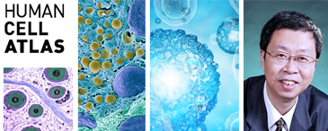
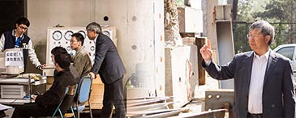
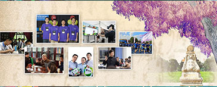

English version
清华新闻
学校概况∨
校长致辞
学校沿革
历任领导
现任领导
组织机构
统计资料
院系设置
师资队伍
教育教学∨
本科生教育
研究生教育
国际学生培养
继续教育
科学研究∨
科研项目
科研机构
科研合作
科研成果与知识产业
学术交流
招生就业∨
本科生招生
研究生招生
国际学生招生
学生职业发展
人才招聘∨
招聘计划
招聘信息
我要应聘
图书馆
走进清华∨
校园生活
校园风光
实用信息
首页
·
学校概况
学校概况
清华大学（Tsinghua University）是中国著名高等学府，坐落于北京西北郊风景秀丽的清华园，是中国高层次人才培养和科学技术研究的重要基地。
新闻头条
更多 》
18
2017 11
施一公研究组发文报道酿酒酵母剪接体处于完成RNA剪接后构象的高分辨率结构
11月17日，清华大学生命学院施一公教授研究组在《细胞》期刊再次发表剪接体结构与机理的最新研究成果。这篇题为《酿酒酵母“催化后剪接......
17
2017 11
清华领衔团队首次实现对唐山大地震精确模拟 相关成果斩获“戈登·贝尔”奖
11月17日凌晨，在美国丹佛举行的全球超级计算大会（SC2017）上，由清华大学地球系统科学系副教授付昊桓等领导的团队所完成的“非......
17
2017 11
蔡奇在清华大学作党的十九大精神宣讲报告 强调坚持社会主义办学方向 ...
11月15日上午，中共中央政治局委员、北京市委书记蔡奇来到清华大学，为师生作党的十九大精神宣讲报告，并就师生关心的问题进行互动交流......
焦点关注
谈家桢生命科学奖十周年庆典暨颁奖大会在清华大学举行
11月18日上午，谈家桢生命科学奖十周年庆典暨颁奖大会在清华大学主楼举行。

清华大学张学工团队入选首批“人类细胞图谱计划”项目
美国太平洋时间2017年10月16日，与“人类基因组计划”相媲美的“人类细胞图谱计划” 首批拟资...
清华生命学院刘万里研究组发文报道磷脂酰肌醇4,5-二磷酸代谢环路增强受体跨膜信号转导的新机制
11月18日，清华大学生命学院刘万里研究组在《科学》旗下免疫学子刊《科学·免疫学》期刊发表了题为《源自磷脂酰肌醇4,5 -二磷酸的正反馈环路持续性驱动B细胞免疫活化》的研究论文。报道B细胞免疫突触中具有时空特异性的磷脂酰肌醇4,5 -二磷酸水解与再生代谢作用形成的正反馈环路(feed forward loop)，有力地地促进抗原受体(BCR)跨膜信号转...

聂建国院士：传递土木工程的广博与厚重
清华大学土水学院土木工程系结构实验大厅与普通实验室有些不同，它更像是真实的、繁忙热闹的建筑工地。...
党的十九大精神清华大学宣讲座谈会举行
11月10日上午，党的十九大精神清华大学宣讲座谈会在主楼接待厅举行。中共中央政治局委员、中央书记处书记、 中宣部部长、学习贯彻党的十九大精神中央宣讲团成员黄坤明围绕如何准确深入地学习领会党的十九大精神作了全面系统 的阐述，并与到场师生代表就大家关心的问题进行了互动交流。会议由清华大学党委书记陈旭主持。
清华领衔斩获高性能计算应用领域最高奖“戈登·贝尔”奖
3天前，在美国丹佛举行的全球超级计算大会上，付昊桓和团队完成的“基于‘神威·太湖之光’ 非线性地震模拟”获得国际高性能计算应用领域最高奖“戈登·贝尔”奖，该奖项被誉为“超级计算应用领域的诺贝尔奖”。
清华美院2015级硕士生滕腾获得第38届国际泷富士美术奖优秀奖
近日，第38届国际泷富士美术奖在日本东京明治纪念馆举行，清华大学美术学院绘画系刘 临教授指导的硕士研究生滕腾以中国画《故事新编》系列作品，代表清华大学美术学院获 得了国际泷富士美术奖优秀奖，也是本届唯一获奖的中国学生。
【人物】桃李不言 下自成蹊——记首届清华新百年教学成就奖获得者曾攀教授
曾攀，清华大学机械工程系教授,曾经八次获得清华大学”良师益友“称号，此次获得首届清华新百 年教学成就奖。记者通过对曾攀的采访，深刻感受到他作为一名教师对学生的眷眷之情，以及他对 教学事业的一片热忱。

“双一流”背景下的一流本科教育：清华倾全力培养肩负使命、追求卓越的人
本科教育是大学人才培养的根本，一流本科教育是一流大学的底色。
常用链接
校园公交车 ﹥
校园公告 ﹥
校园地图 ﹥
实用信息 ﹥
教育基金会 ﹥
校友总会 ﹥